1. Dataset inventory & quality (train + student_test)
Auto-generated findings — eda/EDA_SUMMARY.md
# EDA summary (auto-generated by scripts/01_eda.py) Partitions analysed: train, student_test. evaluator_test not read. ## Inventory | split | trips | points | points_median | points_min | points_max | duration_h | path_km | arcs_median | route_arcs_median | |:-------------|--------:|---------:|----------------:|-------------:|-------------:|-------------:|----------:|--------------:|--------------------:| | student_test | 10 | 19160 | 1420 | 262 | 3958 | 5.6 | 297.6 | 13145 | 250 | | train | 80 | 208417 | 1529 | 361 | 19313 | 126.2 | 2981.9 | 19526.5 | 280 | ## Data quality - Missing values: track=0, nodes=0, arcs=0 - Coordinate order lon,lat confirmed: latitude column within ±90 for all trips = True; median share of GPS points inside network bbox = 1.000 - Arc/route ids within valid range: arcs=True, route=True - Non-increasing timestamps: 0 - Consecutive identical positions (stationary/jitter): 6 - Steps exactly 1 s: 0.9668; steps ≤ 2 s: 0.9865 - Gaps > 10s: 617 in 42 trips; max gap 153064s - Missing 1 Hz samples implied by gaps: 247195 - Median moving speed: 11.4 m/s; implausible speeds (> 70 m/s): 152 ## Road network - Nodes per trip: median 9305, arcs per trip: median 18762 - Isolated nodes (in no arc): 0 - Self-loop arcs: 24; duplicate arcs: 1903 - Two-way share (arc has reverse twin): median 0.951 - Weak components per trip: median 19, max 421; largest SCC share: median 0.964 - Arc length: median of trip medians 25.1 m, max 9358 m ## Reference routes - Route breaks (consecutive arcs not connected): 14 in 11 trips - Repeated arcs in route (loops / revisits): 322 in 10 trips - Route uses a non-canonical duplicate arc: 3; uses self-loop: 0 ## Projection - Distinct UTM zones: 25 - Per-trip UTM median relative error: max over trips 0.086% - Degree-Euclidean median relative error: median over trips 29.9%, worst 67.9%
Partition summary — eda/split_summary.csv
| split | trips | points | points_median | points_min | points_max | duration_h | path_km | arcs_median | route_arcs_median |
|---|---|---|---|---|---|---|---|---|---|
| student_test | 10 | 19160 | 1420 | 262 | 3958 | 5.625 | 297.6 | 1.314e+04 | 250 |
| train | 80 | 208417 | 1529 | 361 | 19313 | 126.2 | 2982 | 1.953e+04 | 280 |
Trips span 25 UTM zones → per-trip projection — eda/trip_locations.png
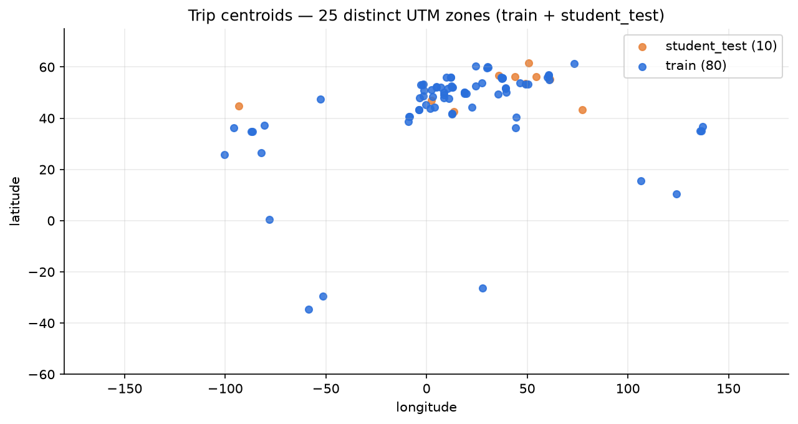
Projection check vs exact geodesic — eda/projection_error.png
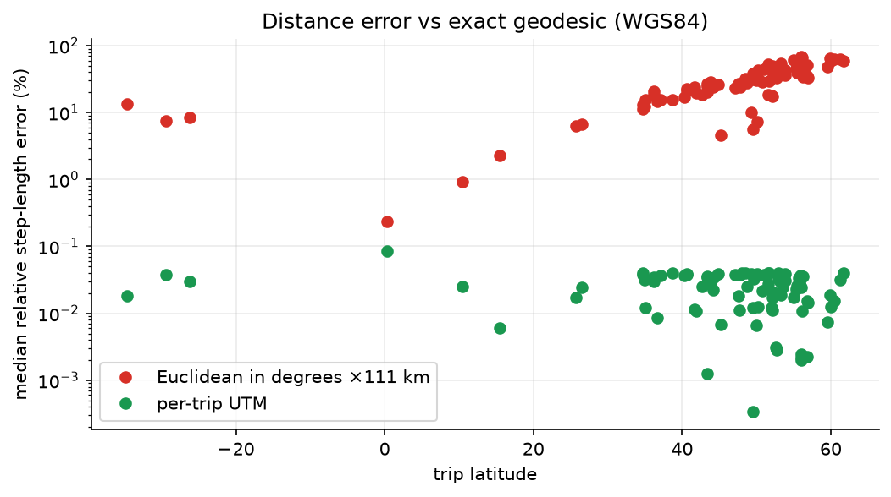
Trajectory length — eda/points_per_trip.png
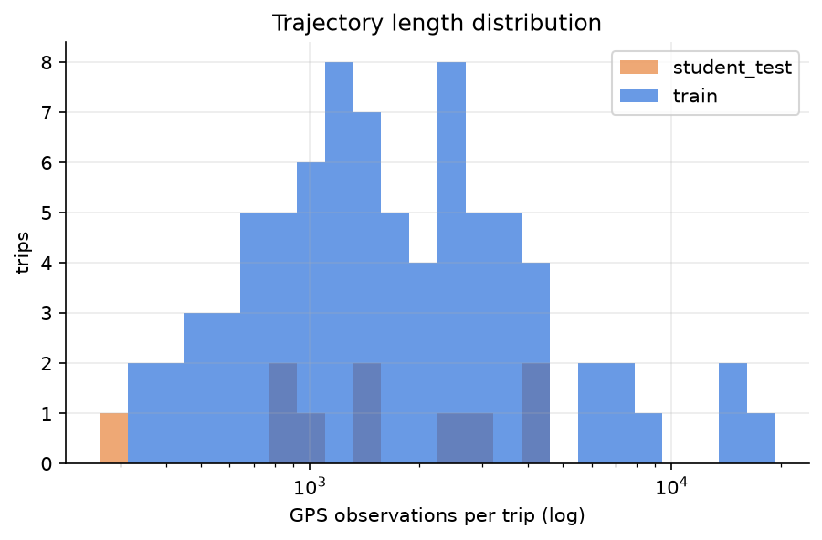
Sampling intervals → gap threshold — eda/sampling_interval_hist.png
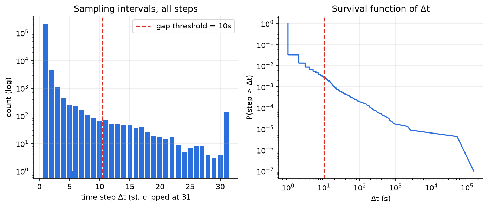
Steps above each threshold — eda/sampling_intervals.csv
| dt_threshold_s | frac_steps_greater | n_steps_greater | n_trips_with_step_greater |
|---|---|---|---|
| 1 | 0.03319 | 7550 | 66 |
| 2 | 0.01352 | 3075 | 53 |
| 3 | 0.008576 | 1951 | 49 |
| 5 | 0.005539 | 1260 | 47 |
| 10 | 0.002712 | 617 | 42 |
| 15 | 0.001547 | 352 | 39 |
| 30 | 0.0005934 | 135 | 30 |
| 60 | 0.0003077 | 70 | 23 |
| 300 | 7.033e-05 | 16 | 11 |
| 3600 | 8.792e-06 | 2 | 2 |
Implied speed / GPS jumps — eda/speed_hist.png
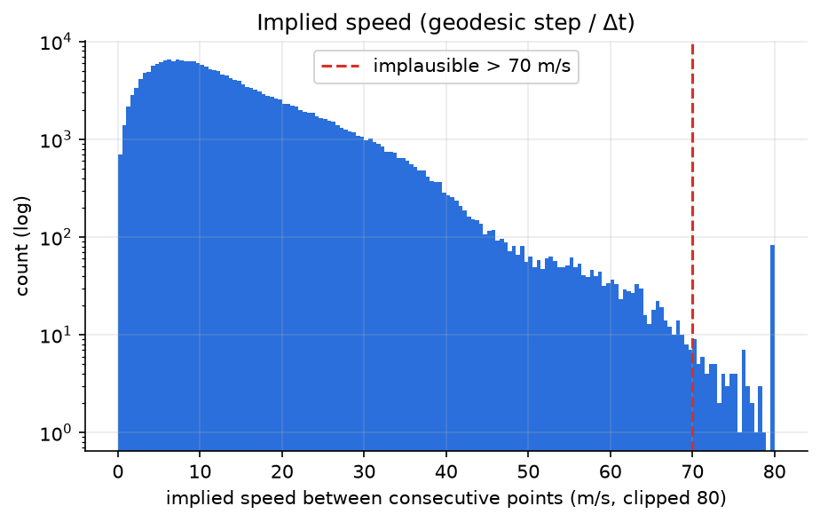
GPS trajectory plots — eda/trajectory_grid.png
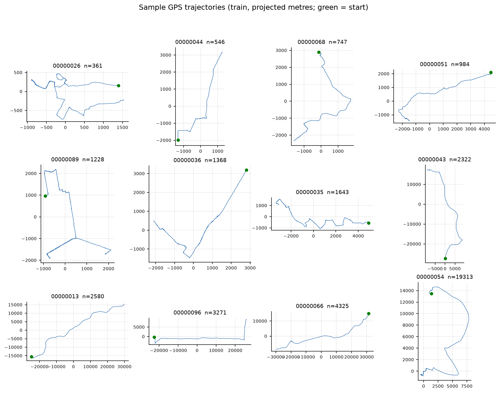
Road network + route + GPS — eda/network_trip_00000010.png
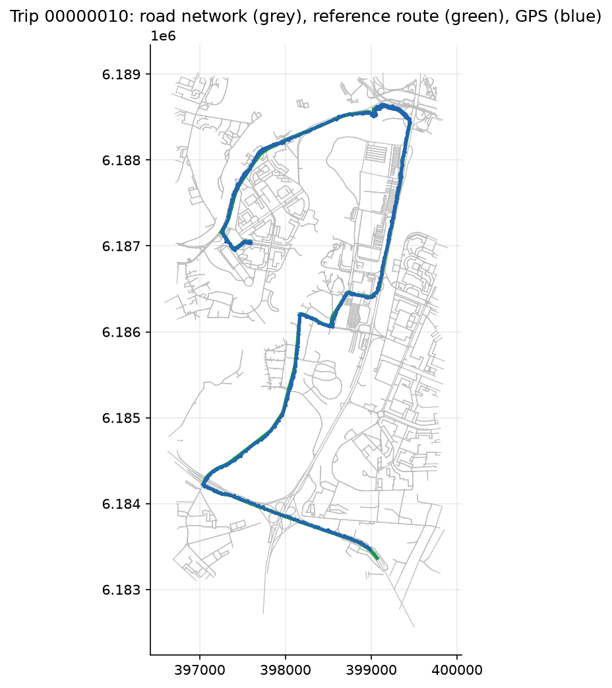
Network size — eda/network_size.png
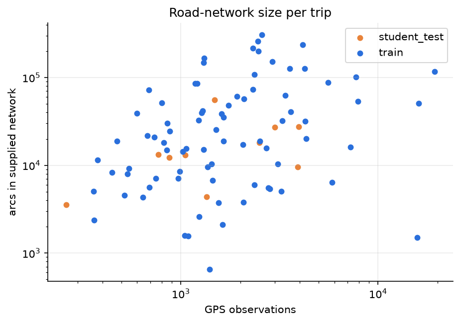
Network connectivity — eda/network_connectivity.png
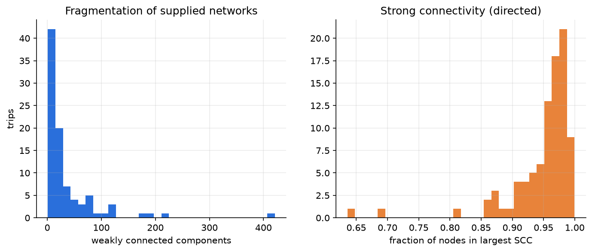
2. Reference labels per GPS point (train + student_test)
Monotonic vs naive labelling — preprocessing/label_alignment_summary.csv
| split | points | unreliable | naive_disagree | naive_order_violations | trips_with_disagreement | naive_disagree_frac | unreliable_frac |
|---|---|---|---|---|---|---|---|
| student_test | 19160 | 17 | 1969 | 483 | 10 | 0.1028 | 0.0008873 |
| train | 208417 | 20540 | 13658 | 3847 | 79 | 0.06553 | 0.09855 |
Why order-preserving alignment — preprocessing/label_naive_vs_monotonic.png
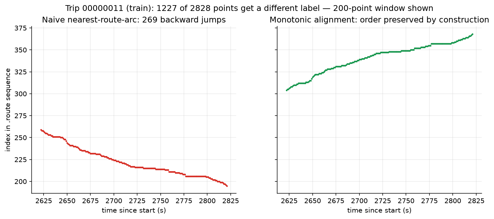
GPS-to-reference distance (train) — preprocessing/label_distance_hist.png
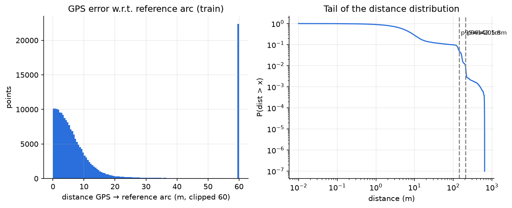
Distance percentiles (train) — preprocessing/label_distance_percentiles.csv
| percentile | ref_dist_m |
|---|---|
| 50 | 5.681 |
| 75 | 10.92 |
| 90 | 89.42 |
| 95 | 142.1 |
| 99 | 205.8 |
| 99.5 | 214.4 |
| 99.9 | 494.7 |
3. Candidate generation (radius chosen on train only)
Decision — preprocessing/radius_decision.txt
Rule: smallest R in [10, 15, 20, 25, 30, 40, 50, 60, 75, 100, 150, 200] with reliable-point miss rate <= 1% (train only). Chosen R = 60 m miss rate reliable = 0.9493%, all points = 10.7041% mean candidates/point = 11.1, p95 = 36, positive rate = 0.0803 Top-K cap check: reference arc within top-30 nearest = 99.8094% Set candidates.radius_m in configs/config.yaml to this value.
Miss rate vs candidate-set size — preprocessing/radius_study.png
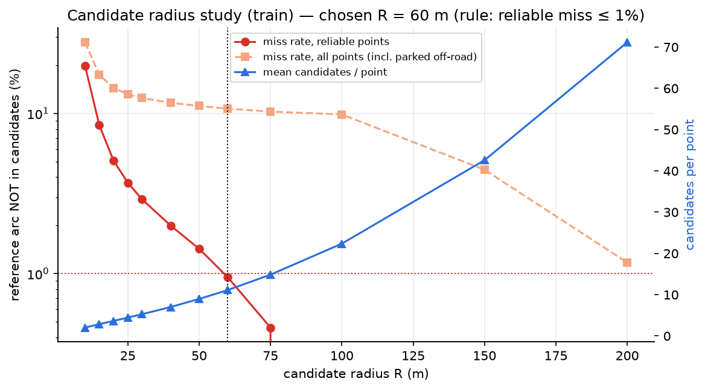
Radius grid — preprocessing/radius_study.csv
| radius_m | miss_rate_all | miss_rate_reliable | miss_rate_reliable_trip_mean | miss_rate_reliable_trip_max | cands_mean | cands_median | cands_p95 | cands_max | points_with_no_candidate | positive_rate |
|---|---|---|---|---|---|---|---|---|---|---|
| 10 | 0.2778 | 0.1989 | 0.1873 | 0.6063 | 2.027 | 2 | 6 | 28 | 0.2255 | 0.3563 |
| 15 | 0.1747 | 0.08451 | 0.07303 | 0.5052 | 2.861 | 2 | 8 | 40 | 0.1355 | 0.2885 |
| 20 | 0.1442 | 0.05071 | 0.03997 | 0.4704 | 3.643 | 2 | 10 | 50 | 0.1118 | 0.2349 |
| 25 | 0.1318 | 0.03694 | 0.02686 | 0.4443 | 4.449 | 4 | 12 | 69 | 0.1025 | 0.1951 |
| 30 | 0.1247 | 0.02907 | 0.02021 | 0.4146 | 5.273 | 4 | 15 | 77 | 0.09702 | 0.166 |
| 40 | 0.1165 | 0.01994 | 0.01339 | 0.3304 | 7.008 | 4 | 20 | 105 | 0.09036 | 0.1261 |
| 50 | 0.1114 | 0.01428 | 0.009337 | 0.2902 | 8.964 | 6 | 28 | 131 | 0.08743 | 0.09913 |
| 60 | 0.107 | 0.009493 | 0.005478 | 0.208 | 11.12 | 7 | 36 | 160 | 0.08379 | 0.08031 |
| 75 | 0.1026 | 0.0046 | 0.002878 | 0.1136 | 14.85 | 10 | 48 | 206 | 0.06514 | 0.06041 |
| 100 | 0.09848 | 0 | 0 | 0 | 22.37 | 14 | 73 | 309 | 0.006976 | 0.0403 |
| 150 | 0.04449 | 0 | 0 | 0 | 42.59 | 26 | 134 | 511 | 0.0009829 | 0.02243 |
| 200 | 0.01172 | 0 | 0 | 0 | 71.16 | 50 | 206 | 822 | 0.0005034 | 0.01389 |
Rank of the true arc among candidates — preprocessing/rank_study.csv
| k | frac_ref_within_top_k |
|---|---|
| 1 | 0.5582 |
| 2 | 0.9181 |
| 3 | 0.9486 |
| 5 | 0.9758 |
| 8 | 0.9882 |
| 10 | 0.9904 |
| 15 | 0.9918 |
| 20 | 0.9939 |
| 30 | 0.9981 |
Two-way roads: distance ties — preprocessing/twin_tie_study.csv
| reliable_points | frac_ref_has_twin_candidate | frac_twin_equidistant_lt_0p5m | nearest_arc_top1_reliable |
|---|---|---|---|
| 37605 | 0.6992 | 0.6992 | 0.5571 |
Final candidate sets per split — preprocessing/candidate_summary.csv
| split | points | candidate_rows | cands_per_point_mean | cands_per_point_p95 | fallback_points | miss_rate_all | miss_rate_reliable | positive_rate | unreliable_points |
|---|---|---|---|---|---|---|---|---|---|
| train | 208417 | 2349980 | 11.28 | 36 | 17492 | 0.1024 | 0.005152 | 0.07961 | 20540 |
| student_test | 19160 | 264674 | 13.81 | 37 | 0 | 0.001305 | 0.0004179 | 0.0723 | 17 |
4. Feature engineering (train)
Non-learned baselines to beat — preprocessing/rule_baselines.csv
| split | baseline | top1_all | top1_reliable |
|---|---|---|---|
| train | nearest arc | 0.5 | 0.5541 |
| train | nearest arc, heading tie-break | 0.7159 | 0.7937 |
| train | oracle (upper bound = 1 - miss rate) | 0.8976 | 0.9948 |
| student_test | nearest arc | 0.5395 | 0.54 |
| student_test | nearest arc, heading tie-break | 0.8192 | 0.8199 |
| student_test | oracle (upper bound = 1 - miss rate) | 0.9987 | 0.9996 |
Single-feature strength — preprocessing/feature_univariate_auc.png
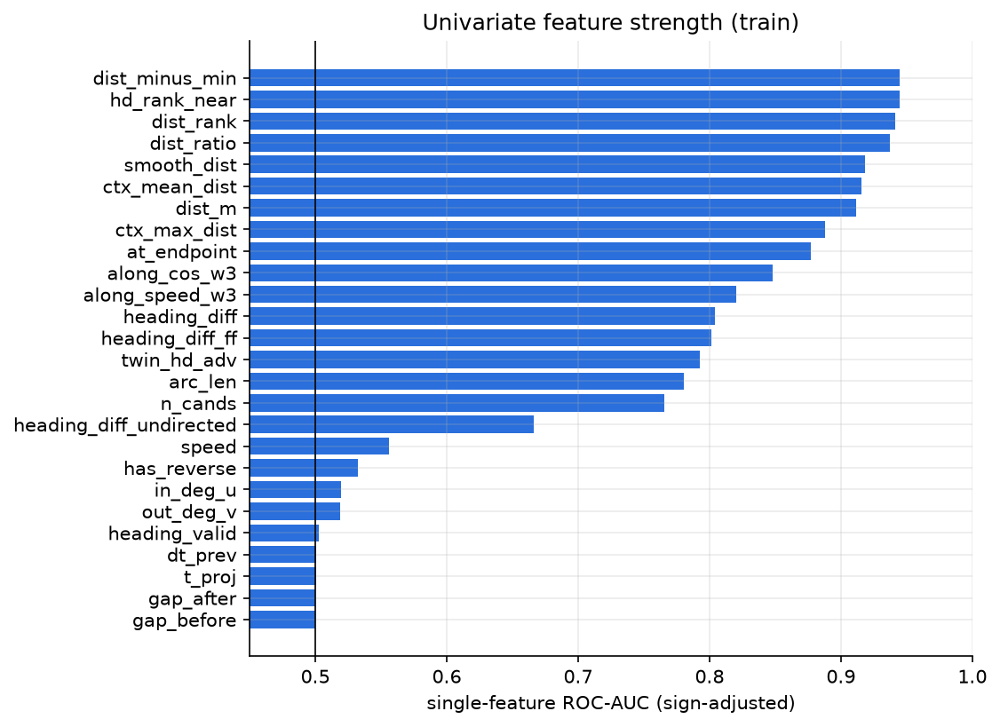
Class-conditional distributions — preprocessing/feature_distributions.png
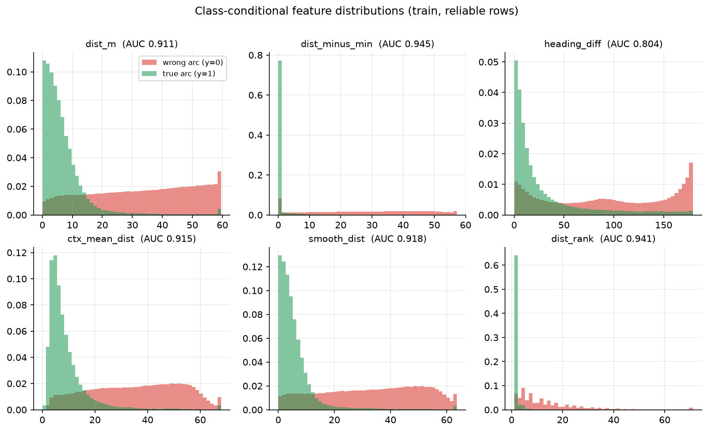
Redundancy check — preprocessing/feature_correlation.png
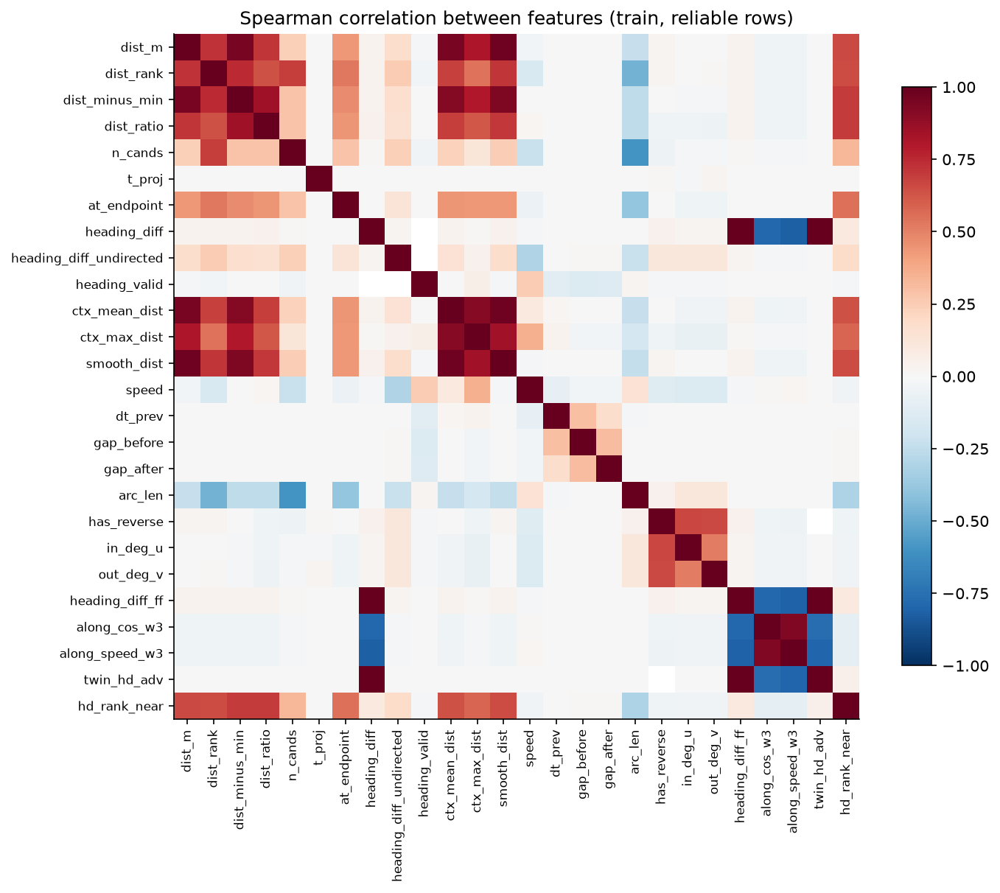
Feature statistics — preprocessing/feature_summary_train.csv
| feature | nan_rate | mean_pos | mean_neg | std | min | max |
|---|---|---|---|---|---|---|
| dist_m | 0 | 7.04 | 33.05 | 18.05 | 0 | 119.2 |
| dist_rank | 0 | 1.822 | 14.12 | 14.09 | 1 | 167 |
| dist_minus_min | 0 | 0.9358 | 27.65 | 18.2 | 0 | 59.98 |
| dist_ratio | 0 | 0.9849 | 8.634 | 8.709 | 0 | 59.86 |
| n_cands | 0 | 12.2 | 26.38 | 20.91 | 1 | 167 |
| t_proj | 0 | 0.4992 | 0.4977 | 0.4541 | 0 | 1 |
| at_endpoint | 0 | 0.0319 | 0.7862 | 0.4467 | 0 | 1 |
| heading_diff | 0.02272 | 31.46 | 93.73 | 60.65 | 5.197e-06 | 180 |
| heading_diff_undirected | 0.02272 | 22.02 | 37.55 | 28.18 | 5.197e-06 | 90 |
| heading_valid | 0 | 0.9816 | 0.9769 | 0.149 | 0 | 1 |
| ctx_mean_dist | 0 | 9.234 | 35.5 | 18.22 | 0.01031 | 249.9 |
| ctx_max_dist | 0 | 17.4 | 49.79 | 25.8 | 0.01031 | 446.6 |
| smooth_dist | 0 | 6.178 | 33.13 | 18.56 | 2.006e-06 | 249.9 |
| speed | 0.00114 | 12.44 | 10.4 | 8.809 | 0 | 135.4 |
| dt_prev | 0.0005727 | 2.313 | 3.939 | 612.8 | 1 | 1.531e+05 |
| gap_before | 0 | 0.003103 | 0.003401 | 0.05801 | 0 | 1 |
| gap_after | 0 | 0.003098 | 0.003471 | 0.05856 | 0 | 1 |
| arc_len | 0 | 208.5 | 62.21 | 169.7 | 0.07014 | 4671 |
| has_reverse | 0 | 0.6983 | 0.763 | 0.4284 | 0 | 1 |
| in_deg_u | 0 | 2.027 | 2.079 | 0.757 | 0 | 7 |
| out_deg_v | 0 | 2.029 | 2.081 | 0.7558 | 0 | 7 |
| heading_diff_ff | 0.001229 | 32.14 | 93.66 | 60.48 | 5.197e-06 | 180 |
| along_cos_w3 | 0.003355 | 0.8232 | -0.05019 | 0.8 | -1 | 1 |
| along_speed_w3 | 0.00114 | 11.11 | -0.741 | 11.47 | -76.43 | 76.38 |
| twin_hd_adv | 0.2435 | -109.6 | 8.902 | 118.1 | -180 | 180 |
| hd_rank_near | 0.0003067 | 6.886 | 85.21 | 39.29 | 1 | 99 |
5. Model experimentation — 9 models, GroupKFold(5) by trip on train; student_test for comparison
Ranking by the primary metric — models/MODEL_SELECTION.md
# Model selection (auto-generated by scripts/05_train_compare.py) Primary metric: mean GroupKFold CV observation-level Top-1 accuracy on reliable points (train partition). Tie-breaker: CV log loss (probability quality matters for HMM emissions). Student-test is reported, not used to tune. | rank | model | CV Top-1 | std | CV log loss | train-val Macro-F1 gap | student-test Top-1 | µs/row | |---|---|---|---|---|---|---|---| | 1 | XGBoost | 0.8749 | 0.0226 | 0.0546 | +0.0385 | 0.9011 | 0.34 | | 2 | RandomForest | 0.8730 | 0.0265 | 0.0544 | +0.0391 | 0.8850 | 1.64 | | 3 | MLP | 0.8728 | 0.0261 | 0.0595 | +0.0168 | 0.8926 | 0.67 | | 4 | LogisticRegression | 0.8726 | 0.0260 | 0.0672 | +0.0025 | 0.8787 | 0.38 | | 5 | GaussianNB | 0.8421 | 0.0257 | 0.5509 | +0.0004 | 0.8503 | 0.90 | | 6 | LightGBM | 0.8360 | 0.0200 | 0.0703 | +0.0394 | 0.8741 | 2.32 | Leader: **XGBoost**. Margin over RandomForest: +0.0019 Top-1 (combined fold std 0.0349). If the margin is within one combined std, prefer the model with lower log loss / faster inference.
Report table 3.1 — models/model_comparison_table.csv
| Model | Algorithm family | Key configuration | CV Top-1 (reliable) | CV Macro F1 | CV Log Loss | Student-test Top-1 | Student-test Macro F1 | Student-test Precision (macro) | Student-test Recall (macro) | Student-test Log Loss | Route continuity (classifier only) | Train time (s, full) | Inference (µs/row) |
|---|---|---|---|---|---|---|---|---|---|---|---|---|---|
| XGBoost | Boosting | n_estimators=400, learning_rate=0.1, max_depth=6, subsample=0.8 | 0.8749 ± 0.0226 | 0.9308 ± 0.0119 | 0.0546 | 0.9011 | 0.9438 | 0.9528 | 0.9352 | 0.0391 | 0.9671 | 2.8 | 0.34 |
| RandomForest | Ensemble (bagging) | n_estimators=200, max_depth=None, min_samples_leaf=5, max_features=sqrt | 0.8730 ± 0.0265 | 0.9320 ± 0.0137 | 0.0544 | 0.885 | 0.937 | 0.9472 | 0.9273 | 0.042 | 0.9615 | 75.9 | 1.64 |
| MLP | Neural network | hidden_layer_sizes=[64, 32], activation=relu, alpha=0.0001, batch_size=1024 | 0.8728 ± 0.0261 | 0.9260 ± 0.0135 | 0.0595 | 0.8926 | 0.9373 | 0.9375 | 0.9372 | 0.043 | 0.9675 | 64.3 | 0.67 |
| LogisticRegression | Linear | C=1.0, penalty=l2, solver=lbfgs, max_iter=1000 | 0.8726 ± 0.0260 | 0.9229 ± 0.0120 | 0.0672 | 0.8787 | 0.9257 | 0.9219 | 0.9296 | 0.0545 | 0.9634 | 3.2 | 0.38 |
| GaussianNB | Probabilistic | var_smoothing=1e-09 | 0.8421 ± 0.0257 | 0.8169 ± 0.0132 | 0.5509 | 0.8503 | 0.8146 | 0.7547 | 0.942 | 0.5184 | 0.958 | 2.1 | 0.9 |
| LightGBM | Boosting | n_estimators=400, learning_rate=0.05, num_leaves=63, min_child_samples=20 | 0.8360 ± 0.0200 | 0.9094 ± 0.0111 | 0.0703 | 0.8741 | 0.928 | 0.938 | 0.9185 | 0.0476 | 0.9666 | 6.1 | 2.32 |
CV Top-1 accuracy (primary metric) — models/cv_top1_comparison.png
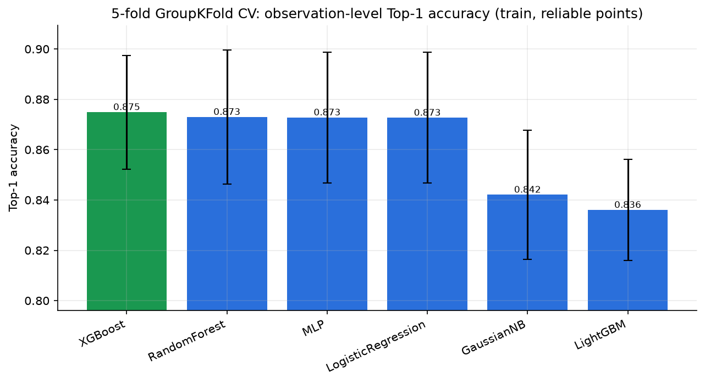
CV Macro F1 — models/cv_macro_f1_comparison.png
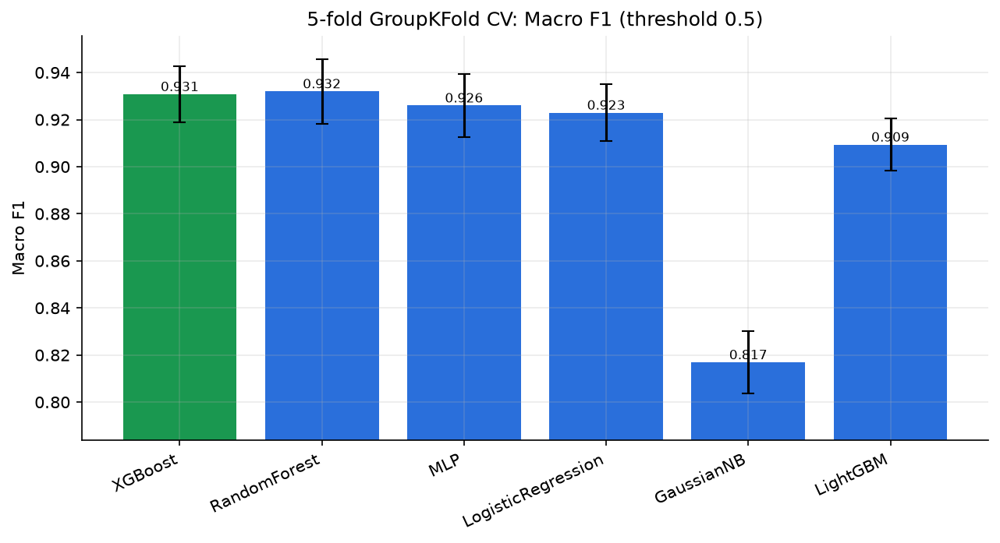
CV log loss (probability quality) — models/cv_logloss_comparison.png
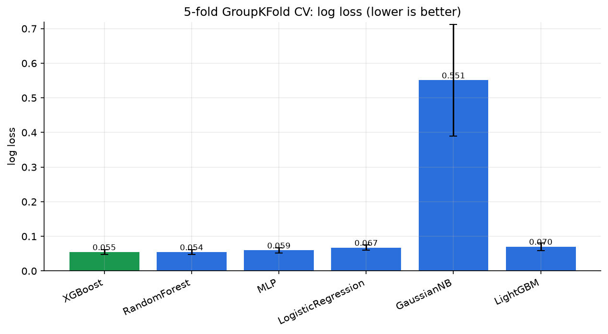
Student-test Top-1 and Macro F1 — models/student_test_top1_f1.png
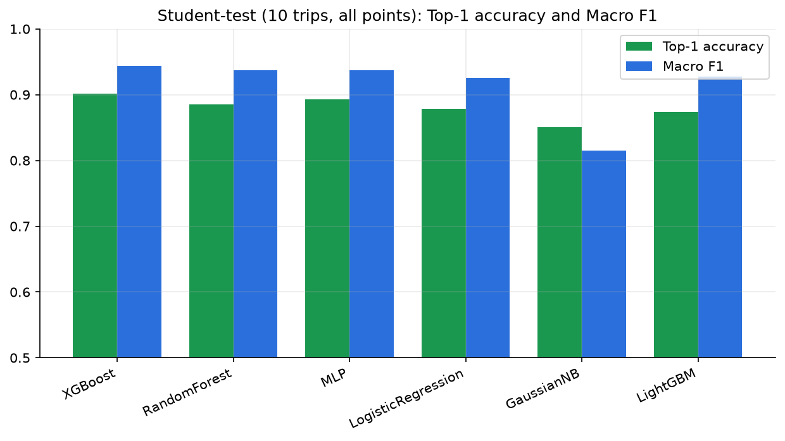
Over/under-fitting check — models/overfitting_train_vs_val.png
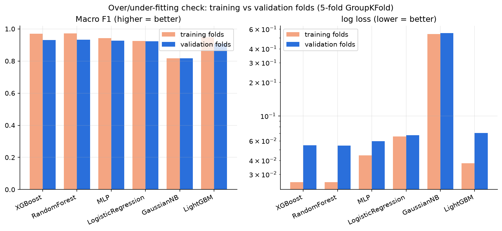
Epoch-wise training histories (boosting rounds / MLP epochs) — models/training_curves.png
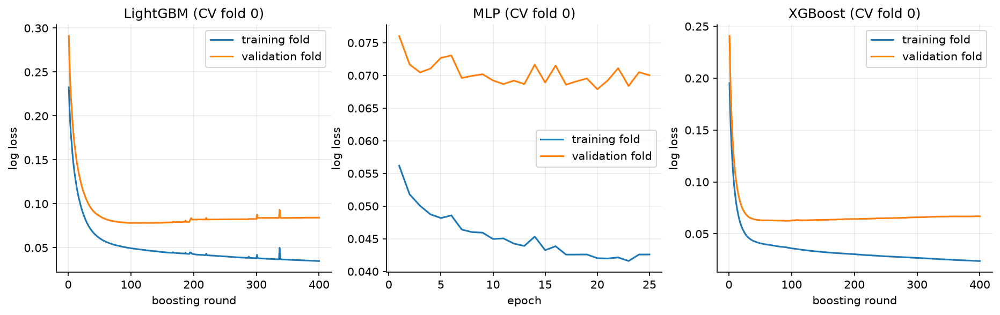
Accuracy vs inference cost — models/accuracy_vs_speed.png
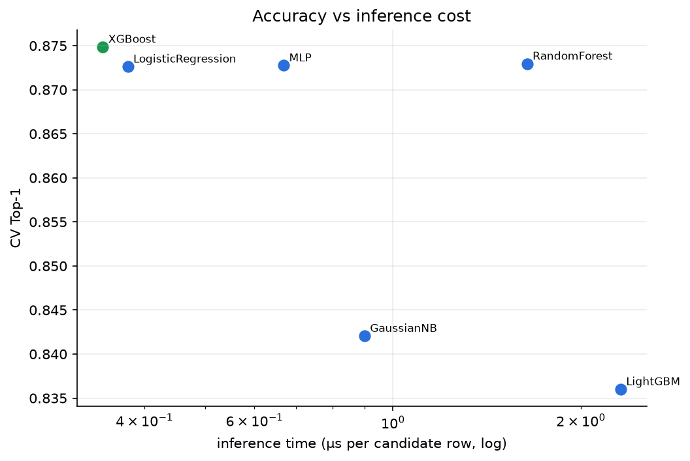
Confusion matrices (student-test) — models/confusion_matrices.png
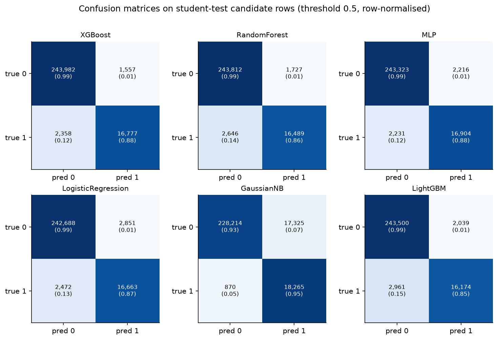
What the models learned from the features — models/feature_importance.png
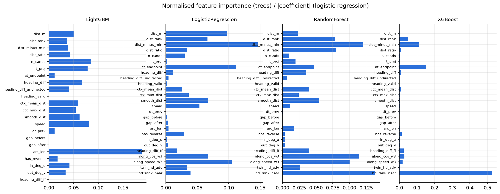
CV mean/std of every metric — models/cv_summary.csv
| model | val_top1_reliable_mean | val_top1_reliable_std | val_top1_all_mean | val_top1_all_std | val_macro_f1_mean | val_macro_f1_std | val_log_loss_mean | val_log_loss_std | val_roc_auc_mean | val_roc_auc_std | val_accuracy_mean | val_accuracy_std | val_precision_macro_mean | val_precision_macro_std | val_recall_macro_mean | val_recall_macro_std | train_top1_reliable_mean | train_top1_reliable_std | train_macro_f1_mean | train_macro_f1_std | train_log_loss_mean | train_log_loss_std | train_seconds_mean | train_seconds_std | infer_us_per_row_mean | infer_us_per_row_std |
|---|---|---|---|---|---|---|---|---|---|---|---|---|---|---|---|---|---|---|---|---|---|---|---|---|---|---|
| GaussianNB | 0.8421 | 0.02568 | 0.7719 | 0.1232 | 0.8169 | 0.01321 | 0.5509 | 0.1614 | 0.9744 | 0.004803 | 0.9268 | 0.02196 | 0.7633 | 0.01237 | 0.9241 | 0.005331 | 0.8459 | 0.007153 | 0.8173 | 0.01038 | 0.5421 | 0.02235 | 1.692 | 0.01488 | 0.8382 | 0.01555 |
| LightGBM | 0.836 | 0.02002 | 0.7663 | 0.1195 | 0.9094 | 0.01114 | 0.07029 | 0.01109 | 0.9883 | 0.001294 | 0.9738 | 0.006074 | 0.9197 | 0.01342 | 0.8997 | 0.01132 | 0.9134 | 0.0063 | 0.9488 | 0.002975 | 0.03763 | 0.002767 | 16.72 | 21.43 | 2.682 | 0.7834 |
| LogisticRegression | 0.8726 | 0.02599 | 0.8001 | 0.1283 | 0.9229 | 0.01203 | 0.06723 | 0.007672 | 0.9871 | 0.002518 | 0.9777 | 0.0038 | 0.9268 | 0.01322 | 0.9191 | 0.01097 | 0.8764 | 0.004575 | 0.9254 | 0.001973 | 0.06553 | 0.00182 | 2.811 | 0.09321 | 0.3874 | 0.005094 |
| MLP | 0.8728 | 0.02607 | 0.8001 | 0.1272 | 0.926 | 0.01353 | 0.05949 | 0.007055 | 0.99 | 0.003363 | 0.9787 | 0.00363 | 0.9316 | 0.01201 | 0.9208 | 0.01923 | 0.9028 | 0.005024 | 0.9427 | 0.002298 | 0.04431 | 0.001198 | 50.14 | 0.2272 | 0.665 | 0.0174 |
| RandomForest | 0.873 | 0.02654 | 0.8001 | 0.1267 | 0.932 | 0.01368 | 0.05436 | 0.006604 | 0.9912 | 0.00294 | 0.9808 | 0.003422 | 0.9461 | 0.01255 | 0.919 | 0.01623 | 0.9564 | 0.00455 | 0.9711 | 0.001726 | 0.02557 | 0.0008934 | 37.94 | 4.989 | 3.88 | 4.829 |
| XGBoost | 0.8749 | 0.02263 | 0.802 | 0.127 | 0.9308 | 0.01188 | 0.05457 | 0.007262 | 0.9917 | 0.00264 | 0.9803 | 0.003073 | 0.9412 | 0.01111 | 0.921 | 0.01453 | 0.9489 | 0.004362 | 0.9693 | 0.001643 | 0.02561 | 0.001197 | 2.69 | 0.08938 | 0.4053 | 0.009393 |
Student-test metrics — models/student_test_metrics.csv
| model | train_seconds_full | infer_seconds | infer_us_per_row | accuracy | precision_pos | recall_pos | f1_pos | precision_macro | recall_macro | macro_f1 | log_loss | roc_auc | top1_all | top1_reliable | candidate_miss_rate | n_points | route_continuity | tn | fp | fn | tp |
|---|---|---|---|---|---|---|---|---|---|---|---|---|---|---|---|---|---|---|---|---|---|
| GaussianNB | 2.145 | 0.2384 | 0.9007 | 0.9313 | 0.5132 | 0.9545 | 0.6675 | 0.7547 | 0.942 | 0.8146 | 0.5184 | 0.9854 | 0.8503 | 0.851 | 0.001305 | 19160 | 0.958 | 228214 | 17325 | 870 | 18265 |
| LightGBM | 6.064 | 0.6129 | 2.316 | 0.9811 | 0.888 | 0.8453 | 0.8661 | 0.938 | 0.9185 | 0.928 | 0.04763 | 0.9943 | 0.8741 | 0.8748 | 0.001305 | 19160 | 0.9666 | 243500 | 2039 | 2961 | 16174 |
| LogisticRegression | 3.208 | 0.0996 | 0.3763 | 0.9799 | 0.8539 | 0.8708 | 0.8623 | 0.9219 | 0.9296 | 0.9257 | 0.0545 | 0.9919 | 0.8787 | 0.8795 | 0.001305 | 19160 | 0.9634 | 242688 | 2851 | 2472 | 16663 |
| MLP | 64.3 | 0.1769 | 0.6684 | 0.9832 | 0.8841 | 0.8834 | 0.8838 | 0.9375 | 0.9372 | 0.9373 | 0.04297 | 0.9952 | 0.8926 | 0.8934 | 0.001305 | 19160 | 0.9675 | 243323 | 2216 | 2231 | 16904 |
| RandomForest | 75.85 | 0.4341 | 1.64 | 0.9835 | 0.9052 | 0.8617 | 0.8829 | 0.9472 | 0.9273 | 0.937 | 0.04199 | 0.9952 | 0.885 | 0.8858 | 0.001305 | 19160 | 0.9615 | 243812 | 1727 | 2646 | 16489 |
| XGBoost | 2.787 | 0.09081 | 0.3431 | 0.9852 | 0.9151 | 0.8768 | 0.8955 | 0.9528 | 0.9352 | 0.9438 | 0.03909 | 0.9958 | 0.9011 | 0.9019 | 0.001305 | 19160 | 0.9671 | 243982 | 1557 | 2358 | 16777 |
4b. Feature ablation: v2 direction features (train CV only)
v1 (21) vs v1+v2 (26) features, same model, rows and folds — ablation/feature_ablation.csv
| feature_set | model | cv_top1 | cv_top1_std | cv_macro_f1 | cv_log_loss | fold_top1 | student_top1 | student_macro_f1 | student_log_loss |
|---|---|---|---|---|---|---|---|---|---|
| v1 (21 features) | XGBoost | 0.8351 | 0.01845 | 0.9083 | 0.06837 | 0.8424 0.8375 0.8291 0.8615 0.8050 | 0.8781 | 0.9296 | 0.04688 |
| v1 + v2 direction (26 features) | XGBoost | 0.8749 | 0.02024 | 0.9308 | 0.05457 | 0.8758 0.9048 0.8733 0.8792 0.8413 | 0.9011 | 0.9438 | 0.03909 |
CV and student_test Top-1 — ablation/feature_ablation.png
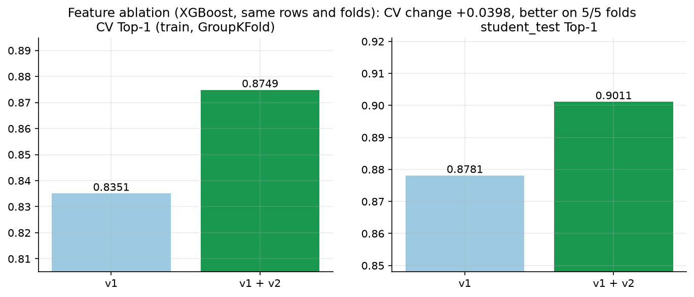
Importance with the new features — ablation/v2_feature_importance.csv
| feature | importance |
|---|---|
| hd_rank_near | 0.5256 |
| at_endpoint | 0.1514 |
| dist_minus_min | 0.1116 |
| dist_rank | 0.05053 |
| along_cos_w3 | 0.02891 |
| heading_diff_ff | 0.02493 |
| along_speed_w3 | 0.01911 |
| has_reverse | 0.01291 |
| dist_ratio | 0.01081 |
| ctx_mean_dist | 0.01012 |
| heading_diff | 0.008964 |
| smooth_dist | 0.005907 |
| speed | 0.005122 |
| in_deg_u | 0.004918 |
| out_deg_v | 0.004738 |
| ctx_max_dist | 0.004513 |
| arc_len | 0.00426 |
| n_cands | 0.003382 |
| t_proj | 0.003205 |
| twin_hd_adv | 0.003074 |
| dist_m | 0.002067 |
| dt_prev | 0.001293 |
| heading_diff_undirected | 0.001124 |
| gap_after | 0.0009652 |
| gap_before | 0.0005893 |
| heading_valid | 0 |
6. Bayesian hyperparameter optimisation of XGBoost (Optuna TPE, GroupKFold on train)
Search record, best parameters, tuned vs untuned — optuna/BAYES_OPT_SUMMARY.md
# Bayesian optimisation of XGBoost (auto-generated by scripts/07_bayes_opt_xgb.py) Sampler: Optuna TPE (seed 42, 10 random start-up trials, multivariate). Pruner: MedianPruner. Objective: maximise mean 5-fold GroupKFold CV observation-level Top-1 (reliable train points). Trials: 40 total = 23 complete + 17 pruned; total search compute ≈ 6.1 min. Best trial #29: CV Top-1 = 0.8746 Best parameters: - n_estimators = 151 - learning_rate = 0.19642 - max_depth = 8 - min_child_weight = 7.0993 - subsample = 0.88197 - colsample_bytree = 0.59715 - reg_lambda = 0.030583 - reg_alpha = 0.030999 - gamma = 3.4272 Tuned vs untuned (same rows, same folds): | model | cv_top1 | cv_top1_std | cv_macro_f1 | cv_log_loss | student_top1 | student_macro_f1 | student_log_loss | infer_us_per_row | train_seconds_full | |:----------------|----------:|--------------:|--------------:|--------------:|---------------:|-------------------:|-------------------:|-------------------:|---------------------:| | XGBoost untuned | 0.8749 | 0.0202 | 0.9308 | 0.0546 | 0.9011 | 0.9438 | 0.0391 | 0.3431 | 2.7874 | | XGBoost tuned | 0.8746 | 0.0234 | 0.9311 | 0.0538 | 0.898 | 0.9418 | 0.0396 | 0.9489 | 4.3331 |
Optimisation history — optuna/optimisation_history.png
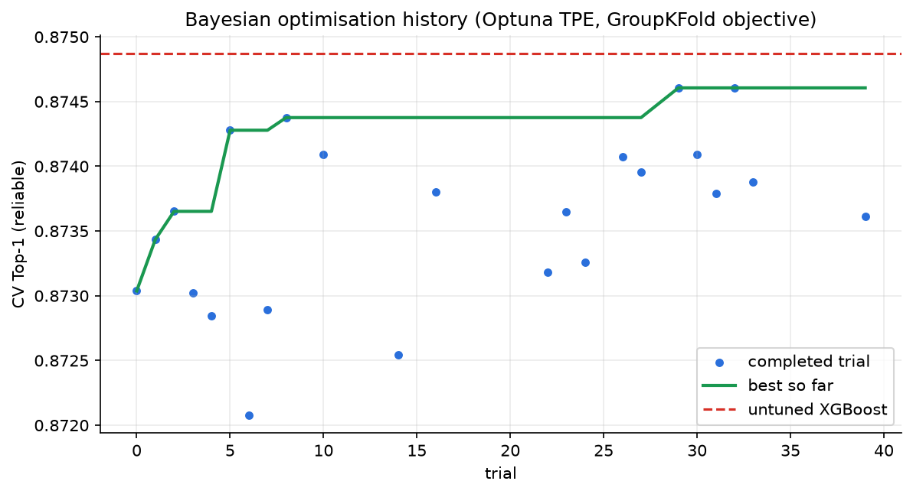
Which hyperparameters mattered — optuna/param_importance.png
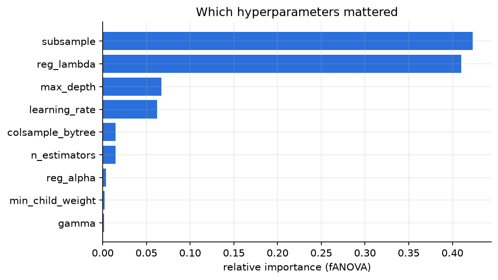
Tuned vs untuned — optuna/tuned_vs_untuned.png
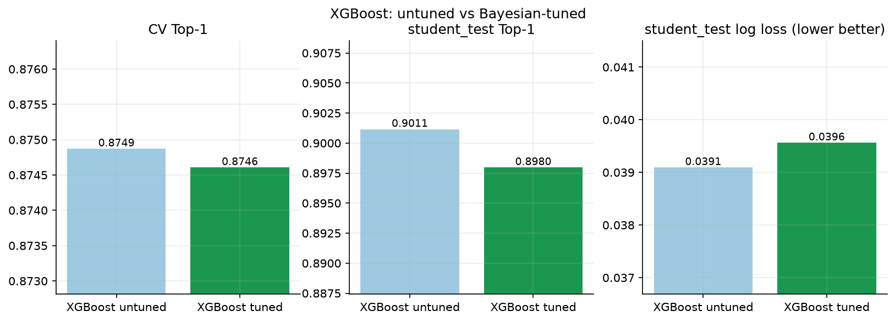
Tuned vs untuned (table) — optuna/tuned_vs_untuned.csv
| model | cv_top1 | cv_top1_std | cv_macro_f1 | cv_log_loss | student_top1 | student_macro_f1 | student_log_loss | infer_us_per_row | train_seconds_full |
|---|---|---|---|---|---|---|---|---|---|
| XGBoost untuned | 0.8749 | 0.02024 | 0.9308 | 0.05457 | 0.9011 | 0.9438 | 0.03909 | 0.3431 | 2.787 |
| XGBoost tuned | 0.8746 | 0.02345 | 0.9311 | 0.05384 | 0.898 | 0.9418 | 0.03956 | 0.9489 | 4.333 |
Every trial (first 40 rows) — optuna/xgb_trials.csv
| number | value | state | params_colsample_bytree | params_gamma | params_learning_rate | params_max_depth | params_min_child_weight | params_n_estimators | params_reg_alpha | params_reg_lambda | params_subsample | user_attrs_fit_seconds | user_attrs_folds_done | user_attrs_log_loss | user_attrs_macro_f1 | user_attrs_top1_std | duration |
|---|---|---|---|---|---|---|---|---|---|---|---|---|---|---|---|---|---|
| 0 | 0.873 | COMPLETE | 0.578 | 3.006 | 0.2537 | 8 | 10.4 | 275 | 2.915 | 0.001707 | 0.578 | 8.464 | NaN | 0.05611 | 0.9289 | 0.02213 | 0 days 00:00:10.138868 |
| 1 | 0.8734 | COMPLETE | 0.5909 | 2.624 | 0.01073 | 10 | 25.96 | 680 | 0.01648 | 0.005415 | 0.6062 | 26.65 | NaN | 0.05209 | 0.932 | 0.0222 | 0 days 00:00:28.437054 |
| 2 | 0.8737 | COMPLETE | 0.6832 | 0.9984 | 0.02693 | 7 | 1.726 | 321 | 1.383 | 0.06672 | 0.6461 | 11.96 | NaN | 0.05192 | 0.9329 | 0.02234 | 0 days 00:00:13.503257 |
| 3 | 0.873 | COMPLETE | 0.5325 | 4.042 | 0.075 | 3 | 10.77 | 402 | 7.287 | 6.245 | 0.5853 | 8.95 | NaN | 0.05316 | 0.9309 | 0.02321 | 0 days 00:00:10.525059 |
| 4 | 0.8728 | COMPLETE | 0.7476 | 1.294 | 0.01394 | 8 | 5.595 | 227 | 4.338 | 0.001373 | 0.561 | 10.69 | NaN | 0.05539 | 0.9322 | 0.02362 | 0 days 00:00:12.113785 |
| 5 | 0.8743 | COMPLETE | 0.9848 | 4.474 | 0.02887 | 7 | 8.489 | 601 | 5.728 | 1.26 | 0.5924 | 14.86 | NaN | 0.05241 | 0.9323 | 0.02253 | 0 days 00:00:16.540250 |
| 6 | 0.8721 | COMPLETE | 0.6627 | 4.144 | 0.23 | 3 | 2.153 | 504 | 0.01217 | 0.03587 | 0.5226 | 25.62 | NaN | 0.05512 | 0.9294 | 0.02196 | 0 days 00:00:30.570154 |
| 7 | 0.8729 | COMPLETE | 0.5373 | 0.9936 | 0.026 | 7 | 1.736 | 262 | 1.227 | 8.862 | 0.9011 | 15.23 | NaN | 0.05215 | 0.9325 | 0.02221 | 0 days 00:00:16.914036 |
| 8 | 0.8744 | COMPLETE | 0.537 | 4.316 | 0.1602 | 8 | 17.32 | 101 | 0.002907 | 0.02716 | 0.8856 | 5.377 | NaN | 0.05298 | 0.9317 | 0.0218 | 0 days 00:00:06.871286 |
| 9 | 0.8888 | PRUNED | 0.8648 | 2.361 | 0.03082 | 3 | 3.376 | 540 | 3.539 | 0.355 | 0.6626 | NaN | 2 | NaN | NaN | NaN | 0 days 00:00:05.007312 |
| 10 | 0.8741 | COMPLETE | 0.6358 | 4.001 | 0.1503 | 10 | 8.439 | 212 | 0.002119 | 0.446 | 0.8413 | 7.391 | NaN | 0.05328 | 0.9307 | 0.02256 | 0 days 00:00:08.956003 |
| 11 | 0.8892 | PRUNED | 0.8698 | 4.163 | 0.1103 | 9 | 9.675 | 543 | 0.05292 | 0.3833 | 0.9868 | NaN | 2 | NaN | NaN | NaN | 0 days 00:00:04.997749 |
| 12 | 0.8894 | PRUNED | 0.5646 | 4.239 | 0.0688 | 8 | 38.48 | 213 | 0.006517 | 0.01057 | 0.8312 | NaN | 2 | NaN | NaN | NaN | 0 days 00:00:03.941182 |
| 13 | 0.8892 | PRUNED | 0.607 | 4.041 | 0.288 | 8 | 16.78 | 103 | 1.094 | 0.003566 | 0.7548 | NaN | 2 | NaN | NaN | NaN | 0 days 00:00:02.795408 |
| 14 | 0.8725 | COMPLETE | 0.9791 | 4.833 | 0.0203 | 6 | 4.17 | 236 | 0.8341 | 3.084 | 0.5278 | 9.142 | NaN | 0.0528 | 0.9325 | 0.02397 | 0 days 00:00:10.647356 |
| 15 | 0.8887 | PRUNED | 0.7347 | 4.562 | 0.04053 | 8 | 22.74 | 293 | 8.032 | 0.1049 | 0.6829 | NaN | 2 | NaN | NaN | NaN | 0 days 00:00:05.349295 |
| 16 | 0.8738 | COMPLETE | 0.6403 | 4.097 | 0.1441 | 8 | 7.632 | 114 | 0.00215 | 0.009334 | 0.568 | 6.218 | NaN | 0.05342 | 0.931 | 0.0218 | 0 days 00:00:07.741953 |
| 17 | 0.8866 | PRUNED | 0.7875 | 3.338 | 0.2811 | 7 | 10.52 | 108 | 0.009596 | 0.319 | 0.7254 | NaN | 2 | NaN | NaN | NaN | 0 days 00:00:02.854713 |
| 18 | 0.8896 | PRUNED | 0.6834 | 4.531 | 0.1608 | 8 | 41.5 | 250 | 0.07362 | 0.1847 | 0.9269 | NaN | 2 | NaN | NaN | NaN | 0 days 00:00:03.415632 |
| 19 | 0.8895 | PRUNED | 0.5181 | 4.075 | 0.2361 | 8 | 10.16 | 184 | 0.01768 | 0.9577 | 0.7208 | NaN | 2 | NaN | NaN | NaN | 0 days 00:00:03.143995 |
| 20 | 0.8892 | PRUNED | 0.5837 | 4.909 | 0.08023 | 9 | 18.59 | 174 | 0.9478 | 0.002602 | 0.8753 | NaN | 2 | NaN | NaN | NaN | 0 days 00:00:03.639673 |
| 21 | 0.8879 | PRUNED | 0.533 | 3.593 | 0.2058 | 9 | 22 | 128 | 0.001101 | 0.2156 | 0.8873 | NaN | 2 | NaN | NaN | NaN | 0 days 00:00:02.976191 |
| 22 | 0.8732 | COMPLETE | 0.5873 | 4.487 | 0.186 | 9 | 21.72 | 105 | 0.02364 | 0.01236 | 0.9908 | 5.25 | NaN | 0.05339 | 0.9308 | 0.02206 | 0 days 00:00:06.708675 |
| 23 | 0.8736 | COMPLETE | 0.616 | 3.46 | 0.1385 | 9 | 22.71 | 178 | 2.124 | 0.1092 | 0.9036 | 14.36 | NaN | 0.05329 | 0.9309 | 0.02173 | 0 days 00:00:18.225445 |
| 24 | 0.8733 | COMPLETE | 0.5531 | 4.544 | 0.2606 | 8 | 12.11 | 138 | 0.006277 | 0.00233 | 0.8377 | 22.13 | NaN | 0.05398 | 0.9301 | 0.02249 | 0 days 00:00:27.514739 |
| 25 | 0.8897 | PRUNED | 0.7005 | 4.021 | 0.1765 | 7 | 14.43 | 119 | 0.02401 | 0.00878 | 0.9483 | NaN | 2 | NaN | NaN | NaN | 0 days 00:00:10.739722 |
| 26 | 0.8741 | COMPLETE | 0.5836 | 4.663 | 0.1792 | 10 | 12.6 | 180 | 0.2588 | 0.5158 | 0.8904 | 16.88 | NaN | 0.0528 | 0.9315 | 0.02224 | 0 days 00:00:20.221928 |
| 27 | 0.874 | COMPLETE | 0.556 | 4.112 | 0.1148 | 8 | 18.53 | 135 | 0.02425 | 0.001872 | 0.8983 | 6.275 | NaN | 0.05273 | 0.931 | 0.02209 | 0 days 00:00:07.796984 |
| 28 | 0.8894 | PRUNED | 0.5375 | 2.868 | 0.1748 | 7 | 13.29 | 122 | 0.1158 | 0.008066 | 0.9056 | NaN | 2 | NaN | NaN | NaN | 0 days 00:00:02.839293 |
| 29 | 0.8746 | COMPLETE | 0.5971 | 3.427 | 0.1964 | 8 | 7.099 | 151 | 0.031 | 0.03058 | 0.882 | 5.928 | NaN | 0.05384 | 0.9311 | 0.02345 | 0 days 00:00:07.404586 |
| 30 | 0.8741 | COMPLETE | 0.5298 | 4.188 | 0.1097 | 7 | 11.8 | 142 | 0.02507 | 0.03454 | 0.8955 | 6.154 | NaN | 0.05279 | 0.9316 | 0.02229 | 0 days 00:00:07.658042 |
| 31 | 0.8738 | COMPLETE | 0.5094 | 4.722 | 0.1241 | 7 | 38.84 | 130 | 0.00558 | 0.026 | 0.8452 | 5.84 | NaN | 0.05279 | 0.9316 | 0.02203 | 0 days 00:00:07.303577 |
| 32 | 0.8746 | COMPLETE | 0.5737 | 4.807 | 0.1537 | 8 | 22.39 | 146 | 0.4611 | 0.02283 | 0.8775 | 5.939 | NaN | 0.05281 | 0.9314 | 0.02212 | 0 days 00:00:07.483050 |
| 33 | 0.8739 | COMPLETE | 0.5902 | 4.96 | 0.1138 | 9 | 18.64 | 120 | 0.005269 | 0.02088 | 0.914 | 6.159 | NaN | 0.05257 | 0.9316 | 0.02172 | 0 days 00:00:07.639961 |
| 34 | 0.8892 | PRUNED | 0.5241 | 4.473 | 0.1954 | 7 | 10.2 | 145 | 0.07891 | 0.003857 | 0.8848 | NaN | 2 | NaN | NaN | NaN | 0 days 00:00:02.874648 |
| 35 | 0.8891 | PRUNED | 0.534 | 4.049 | 0.2789 | 7 | 11.07 | 103 | 0.002047 | 0.01929 | 0.9014 | NaN | 2 | NaN | NaN | NaN | 0 days 00:00:02.623096 |
| 36 | 0.8896 | PRUNED | 0.537 | 4.564 | 0.06954 | 8 | 38.86 | 136 | 0.8585 | 0.04032 | 0.9737 | NaN | 2 | NaN | NaN | NaN | 0 days 00:00:03.359152 |
| 37 | 0.8895 | PRUNED | 0.5339 | 4.256 | 0.1601 | 6 | 25.79 | 122 | 0.003384 | 0.01326 | 0.8854 | NaN | 2 | NaN | NaN | NaN | 0 days 00:00:02.821690 |
| 38 | 0.8886 | PRUNED | 0.5241 | 4.865 | 0.2056 | 10 | 35.97 | 121 | 0.002607 | 0.0139 | 0.9418 | NaN | 2 | NaN | NaN | NaN | 0 days 00:00:02.747508 |
| 39 | 0.8736 | COMPLETE | 0.535 | 4.718 | 0.1782 | 9 | 19.86 | 221 | 0.02621 | 0.03814 | 0.9307 | 6.757 | NaN | 0.05262 | 0.9317 | 0.02181 | 0 days 00:00:08.330870 |
7. HMM + Viterbi route reconstruction (decoder tuned on train OOF; student_test reported)
Classifier-only vs classifier + HMM — hmm/classifier_vs_hmm.csv
| partition | method | top1_all | top1_reliable | continuity | route_f1 | route_precision | route_recall |
|---|---|---|---|---|---|---|---|
| train (OOF) | classifier only | 0.7899 | 0.8758 | 0.9585 | 0.8763 | 0.8707 | 0.8921 |
| train (OOF) | classifier + HMM | 0.8379 | 0.9289 | 0.9879 | 0.9222 | 0.946 | 0.9044 |
| student_test | classifier only | 0.898 | 0.8988 | 0.9663 | 0.8959 | 0.897 | 0.8991 |
| student_test | classifier + HMM | 0.94 | 0.9409 | 0.9973 | 0.9379 | 0.9701 | 0.91 |
Top-1, route continuity, route F1 — hmm/classifier_vs_hmm.png
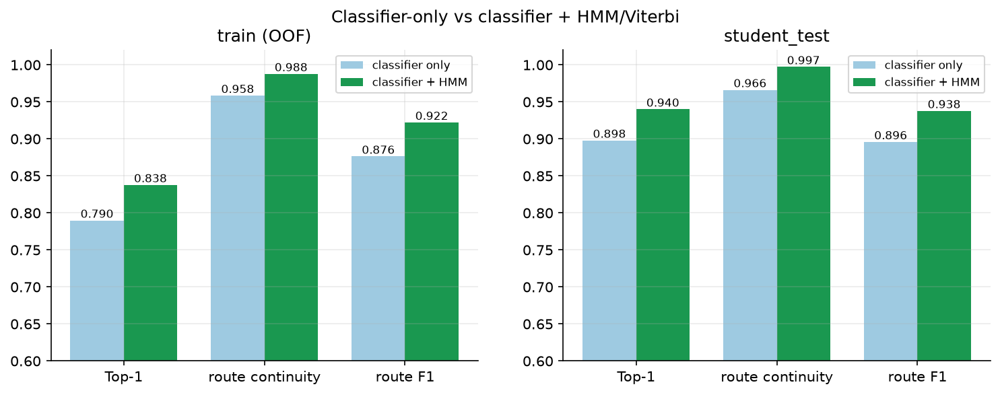
Decoder grid (beta x emission weight) on train OOF — hmm/hmm_grid.png
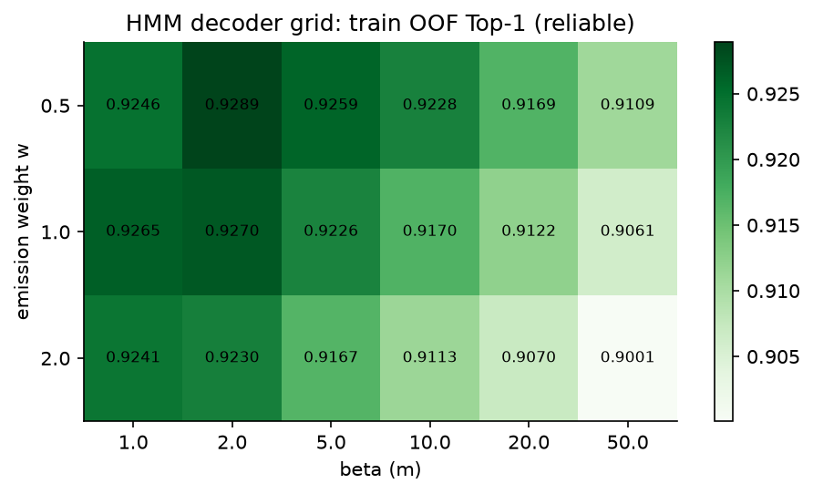
Decoder grid (table) — hmm/hmm_grid_train_oof.csv
| beta | w | top1_all | top1_reliable | continuity | route_f1 | route_precision | route_recall | seconds |
|---|---|---|---|---|---|---|---|---|
| 1 | 0.5 | 0.8341 | 0.9246 | 0.9876 | 0.9173 | 0.9351 | 0.9053 | 5.001 |
| 1 | 1 | 0.8357 | 0.9265 | 0.9878 | 0.9214 | 0.9452 | 0.9038 | 4.989 |
| 1 | 2 | 0.8336 | 0.9241 | 0.9879 | 0.9237 | 0.9513 | 0.9023 | 4.952 |
| 2 | 0.5 | 0.8379 | 0.9289 | 0.9879 | 0.9222 | 0.946 | 0.9044 | 4.972 |
| 2 | 1 | 0.8362 | 0.927 | 0.988 | 0.9244 | 0.9521 | 0.9027 | 4.957 |
| 2 | 2 | 0.8325 | 0.923 | 0.9881 | 0.9238 | 0.9543 | 0.8996 | 4.98 |
| 5 | 0.5 | 0.8352 | 0.9259 | 0.9881 | 0.9246 | 0.9537 | 0.9016 | 5 |
| 5 | 1 | 0.8321 | 0.9226 | 0.9881 | 0.9242 | 0.9549 | 0.8998 | 5.059 |
| 5 | 2 | 0.8268 | 0.9167 | 0.9878 | 0.9208 | 0.9504 | 0.8975 | 4.953 |
| 10 | 0.5 | 0.8323 | 0.9228 | 0.9881 | 0.924 | 0.9548 | 0.8997 | 5.011 |
| 10 | 1 | 0.8271 | 0.917 | 0.9879 | 0.9212 | 0.9511 | 0.8977 | 4.902 |
| 10 | 2 | 0.8219 | 0.9113 | 0.9872 | 0.9171 | 0.9437 | 0.8968 | 5.04 |
| 20 | 0.5 | 0.827 | 0.9169 | 0.9879 | 0.9207 | 0.9505 | 0.8974 | 5.037 |
| 20 | 1 | 0.8227 | 0.9122 | 0.9872 | 0.9175 | 0.9444 | 0.8971 | 5.035 |
| 20 | 2 | 0.818 | 0.907 | 0.9861 | 0.9129 | 0.9368 | 0.896 | 5.063 |
| 50 | 0.5 | 0.8215 | 0.9109 | 0.987 | 0.916 | 0.9419 | 0.8969 | 4.949 |
| 50 | 1 | 0.8172 | 0.9061 | 0.9856 | 0.9111 | 0.9338 | 0.8956 | 5.004 |
| 50 | 2 | 0.8117 | 0.9001 | 0.9834 | 0.9064 | 0.9253 | 0.8951 | 4.971 |
Where the HMM helped / did not help — hmm/per_trip_gain_student_test.png
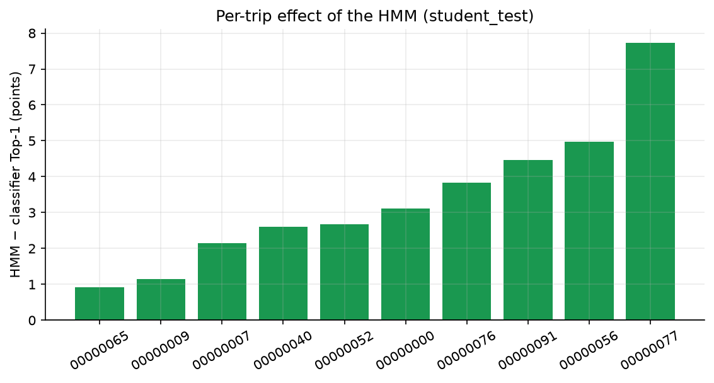
Per-trip comparison (student_test) — hmm/per_trip_student_test.csv
| trip_id | n_points | top1_classifier | continuity_classifier | route_f1_classifier | top1_hmm | continuity_hmm | route_f1_hmm | top1_gain |
|---|---|---|---|---|---|---|---|---|
| 65 | 768 | 0.8568 | 0.9791 | 0.8935 | 0.8659 | 0.9987 | 0.947 | 0.009115 |
| 9 | 1049 | 0.8913 | 0.9485 | 0.8647 | 0.9028 | 0.9876 | 0.8962 | 0.01144 |
| 7 | 1354 | 0.9786 | 0.9993 | 0.9837 | 1 | 1 | 0.9918 | 0.02142 |
| 40 | 2995 | 0.9489 | 0.9846 | 0.9384 | 0.975 | 1 | 0.9754 | 0.02604 |
| 52 | 262 | 0.9733 | 0.977 | 0.8778 | 1 | 0.9962 | 0.9266 | 0.02672 |
| 0 | 2503 | 0.9529 | 0.9812 | 0.9105 | 0.984 | 0.9996 | 0.9748 | 0.03116 |
| 76 | 1486 | 0.9287 | 0.948 | 0.8723 | 0.967 | 0.9938 | 0.9073 | 0.03836 |
| 91 | 874 | 0.9027 | 0.9427 | 0.8387 | 0.9474 | 0.9885 | 0.8762 | 0.04462 |
| 56 | 3958 | 0.9138 | 0.9414 | 0.9101 | 0.9636 | 0.996 | 0.9452 | 0.04977 |
| 77 | 3911 | 0.7719 | 0.9701 | 0.8696 | 0.8491 | 0.9997 | 0.9384 | 0.07722 |
Per-trip comparison (train OOF) — hmm/per_trip_train_oof.csv
| trip_id | n_points | top1_classifier | continuity_classifier | route_f1_classifier | top1_hmm | continuity_hmm | route_f1_hmm | top1_gain |
|---|---|---|---|---|---|---|---|---|
| 63 | 2781 | 0.8583 | 0.9842 | 0.9394 | 0.8288 | 0.9946 | 0.9557 | -0.02949 |
| 68 | 747 | 0.9572 | 0.9919 | 0.9409 | 0.9531 | 0.9987 | 0.9532 | -0.004016 |
| 5 | 1045 | 0.9761 | 0.9933 | 0.9859 | 0.9732 | 1 | 0.9953 | -0.002871 |
| 78 | 2909 | 0.9718 | 0.9691 | 0.8859 | 0.9697 | 0.9813 | 0.8986 | -0.002063 |
| 39 | 363 | 0.9752 | 0.9751 | 0.9311 | 0.9752 | 0.9917 | 0.9272 | 0 |
| 26 | 361 | 0.903 | 0.9614 | 0.8103 | 0.903 | 0.9792 | 0.8174 | 0 |
| 66 | 4325 | 0.8923 | 0.9986 | 0.9798 | 0.8936 | 1 | 0.9878 | 0.001387 |
| 41 | 1019 | 0.9657 | 0.9666 | 0.8812 | 0.9676 | 0.9931 | 0.9173 | 0.001963 |
| 22 | 474 | 0.9051 | 0.9116 | 0.7461 | 0.9072 | 0.9461 | 0.805 | 0.00211 |
| 11 | 2828 | 0.9958 | 0.9961 | 0.9667 | 1 | 1 | 0.9764 | 0.004243 |
| 12 | 1608 | 0.995 | 0.9988 | 0.978 | 0.9994 | 1 | 0.9901 | 0.004353 |
| 37 | 677 | 0.9852 | 0.991 | 0.953 | 0.9897 | 1 | 0.9524 | 0.004431 |
| 48 | 1240 | 0.9597 | 0.979 | 0.8797 | 0.9645 | 0.996 | 0.9193 | 0.004839 |
| 45 | 640 | 0.9391 | 0.9781 | 0.9016 | 0.9453 | 1 | 0.95 | 0.00625 |
| 54 | 19313 | 0.08647 | 0.8903 | 0.8351 | 0.09279 | 0.9073 | 0.896 | 0.006317 |
| 97 | 1740 | 0.9868 | 0.996 | 0.9618 | 0.9931 | 0.9988 | 0.9688 | 0.006322 |
| 86 | 4143 | 0.9906 | 0.9882 | 0.9689 | 0.9973 | 0.9993 | 0.9842 | 0.006758 |
| 20 | 2353 | 0.9669 | 0.9974 | 0.9365 | 0.9737 | 1 | 0.9754 | 0.0068 |
| 92 | 7892 | 0.9436 | 0.9749 | 0.9481 | 0.9505 | 0.9967 | 0.956 | 0.006842 |
| 18 | 379 | 0.9683 | 0.9524 | 0.8581 | 0.9763 | 0.9788 | 0.8865 | 0.007916 |
| 61 | 1430 | 0.6552 | 0.9132 | 0.7864 | 0.6643 | 0.9818 | 0.8378 | 0.009091 |
| 98 | 5584 | 0.981 | 0.9901 | 0.9564 | 0.9907 | 0.9993 | 0.9819 | 0.00967 |
| 88 | 876 | 0.9247 | 0.9781 | 0.9366 | 0.9349 | 1 | 0.9533 | 0.01027 |
| 64 | 2093 | 0.9857 | 0.9885 | 0.93 | 0.9962 | 0.9986 | 0.9486 | 0.01051 |
| 75 | 1628 | 0.8194 | 0.9773 | 0.8498 | 0.8305 | 0.9982 | 0.9209 | 0.01106 |
| 42 | 7739 | 0.9762 | 0.984 | 0.9676 | 0.989 | 0.9997 | 0.9733 | 0.01279 |
| 85 | 1092 | 0.8938 | 0.9834 | 0.9222 | 0.9075 | 1 | 0.9486 | 0.01374 |
| 4 | 1064 | 0.8365 | 0.9682 | 0.7102 | 0.8506 | 0.9953 | 0.7161 | 0.0141 |
| 38 | 1287 | 0.927 | 0.9727 | 0.9241 | 0.9417 | 1 | 0.9478 | 0.01476 |
| 24 | 801 | 0.9763 | 0.9812 | 0.939 | 0.9913 | 1 | 0.9631 | 0.01498 |
| 46 | 1401 | 0.9158 | 0.9842 | 0.8811 | 0.9315 | 1 | 0.9552 | 0.0157 |
| 44 | 546 | 0.9615 | 0.9742 | 0.9202 | 0.978 | 1 | 0.9569 | 0.01648 |
| 71 | 850 | 0.9553 | 0.9753 | 0.9415 | 0.9729 | 1 | 0.9593 | 0.01765 |
| 57 | 1645 | 0.9234 | 0.9842 | 0.932 | 0.9416 | 1 | 0.9625 | 0.01824 |
| 32 | 2464 | 0.9334 | 0.9658 | 0.9082 | 0.9521 | 0.9976 | 0.9381 | 0.01867 |
| 6 | 1450 | 0.9434 | 0.9758 | 0.9394 | 0.9628 | 1 | 0.948 | 0.01931 |
| 70 | 2076 | 0.9066 | 0.9769 | 0.88 | 0.9277 | 0.9995 | 0.9045 | 0.02119 |
| 55 | 2472 | 0.9778 | 0.9826 | 0.9529 | 0.9992 | 0.9992 | 0.985 | 0.02144 |
| 50 | 518 | 0.9653 | 0.9749 | 0.9474 | 0.9884 | 1 | 0.9892 | 0.02317 |
| 99 | 2322 | 0.9255 | 0.9664 | 0.9217 | 0.95 | 0.9957 | 0.9524 | 0.02455 |
8. Held-out evaluator_test (models trained on train only; selection frozen before this test)
Model choice recorded before evaluation — evaluator_test/selection_frozen_before_eval.json
{
"selected_model": "XGBoost",
"selected_by": "CV Top-1 tie -> CV log loss -> speed (scripts/05_train_compare.py)",
"selection_file_mtime": "Wed Nov 18 14:14:54 2026",
"frozen_at": "Wed Nov 18 14:25:45 2026",
"models_evaluated": [
"GaussianNB",
"LogisticRegression",
"MLP",
"RandomForest",
"XGBoost",
"XGBoost_tuned"
]
}All models on evaluator_test — evaluator_test/evaluator_test_summary.csv
| model | selected | top1_all | top1_reliable | macro_f1 | precision_macro | recall_macro | log_loss | roc_auc | route_continuity | candidate_miss_rate | n_points | infer_us_per_row |
|---|---|---|---|---|---|---|---|---|---|---|---|---|
| RandomForest | False | 0.887 | 0.887 | 0.9357 | 0.9531 | 0.9199 | 0.04591 | 0.9952 | 0.966 | 0 | 19674 | 1.619 |
| XGBoost_tuned | False | 0.8846 | 0.8846 | 0.9334 | 0.948 | 0.9198 | 0.04566 | 0.9951 | 0.9698 | 0 | 19674 | 0.3719 |
| LogisticRegression | False | 0.8835 | 0.8835 | 0.9279 | 0.9297 | 0.9261 | 0.05703 | 0.9922 | 0.9677 | 0 | 19674 | 0.3862 |
| XGBoost | True | 0.879 | 0.879 | 0.9316 | 0.9452 | 0.919 | 0.04609 | 0.995 | 0.9706 | 0 | 19674 | 0.4291 |
| MLP | False | 0.8766 | 0.8766 | 0.9292 | 0.9309 | 0.9274 | 0.05038 | 0.9941 | 0.9713 | 0 | 19674 | 0.6624 |
| GaussianNB | False | 0.8461 | 0.8461 | 0.8101 | 0.7508 | 0.9405 | 0.5183 | 0.9879 | 0.9651 | 0 | 19674 | 1.004 |
CV vs student_test vs evaluator_test — evaluator_test/evaluator_test_top1.png
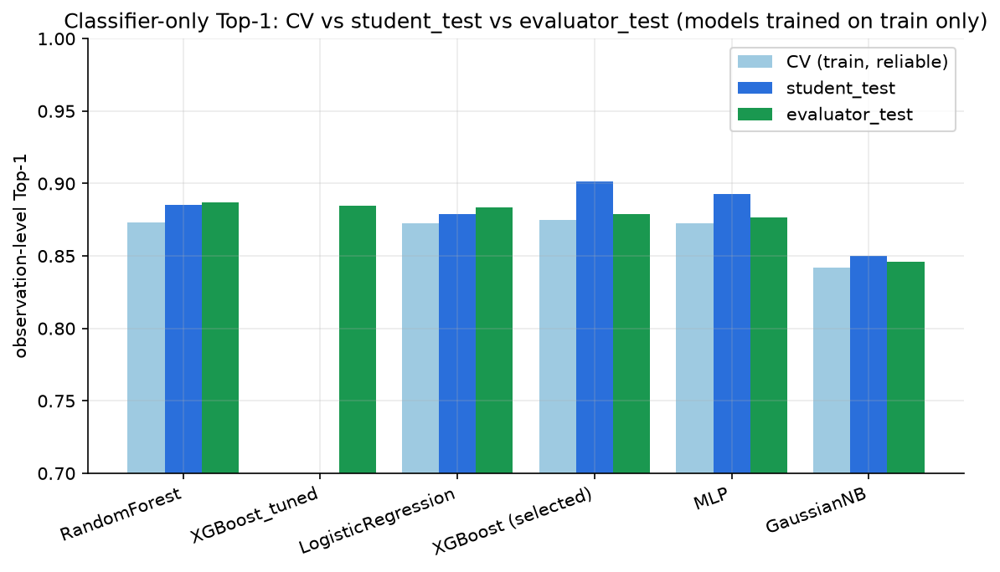
Generalisation across partitions — evaluator_test/cv_vs_student_vs_evaluator.csv
| model | cv_top1_reliable | student_test_top1 | evaluator_test_top1 | cv_log_loss | student_test_log_loss | evaluator_test_log_loss |
|---|---|---|---|---|---|---|
| RandomForest | 0.873 | 0.885 | 0.887 | 0.05436 | 0.04199 | 0.04591 |
| XGBoost_tuned | NaN | NaN | 0.8846 | NaN | NaN | 0.04566 |
| LogisticRegression | 0.8726 | 0.8787 | 0.8835 | 0.06723 | 0.0545 | 0.05703 |
| XGBoost | 0.8749 | 0.9011 | 0.879 | 0.05457 | 0.03909 | 0.04609 |
| MLP | 0.8728 | 0.8926 | 0.8766 | 0.05949 | 0.04297 | 0.05038 |
| GaussianNB | 0.8421 | 0.8503 | 0.8461 | 0.5509 | 0.5184 | 0.5183 |
Per-trip Top-1 — evaluator_test/evaluator_test_per_trip_top1.csv
| Unnamed: 0 | RandomForest | XGBoost_tuned | LogisticRegression | XGBoost | MLP | GaussianNB |
|---|---|---|---|---|---|---|
| 15 | 0.7693 | 0.7571 | 0.7725 | 0.7402 | 0.7396 | 0.6954 |
| 17 | 0.9391 | 0.9428 | 0.925 | 0.9435 | 0.9339 | 0.9042 |
| 23 | 0.9476 | 0.9498 | 0.9541 | 0.9476 | 0.9498 | 0.9345 |
| 30 | 0.818 | 0.8012 | 0.8058 | 0.7936 | 0.7997 | 0.7905 |
| 49 | 0.989 | 0.9902 | 0.9875 | 0.9917 | 0.9902 | 0.9796 |
| 59 | 0.9622 | 0.968 | 0.9476 | 0.9661 | 0.9641 | 0.935 |
| 67 | 0.9541 | 0.9574 | 0.9531 | 0.9563 | 0.9531 | 0.9312 |
| 73 | 0.9825 | 0.9834 | 0.9773 | 0.9808 | 0.9825 | 0.9624 |
| 87 | 0.9535 | 0.9593 | 0.945 | 0.9614 | 0.9528 | 0.94 |
| 94 | 0.9313 | 0.9375 | 0.922 | 0.9406 | 0.9356 | 0.8969 |